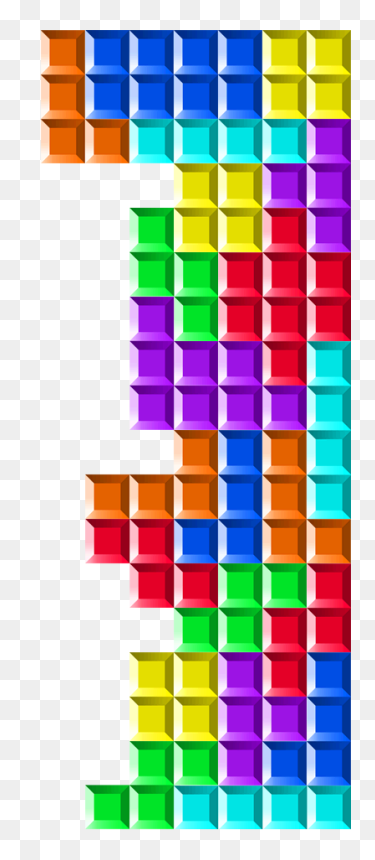
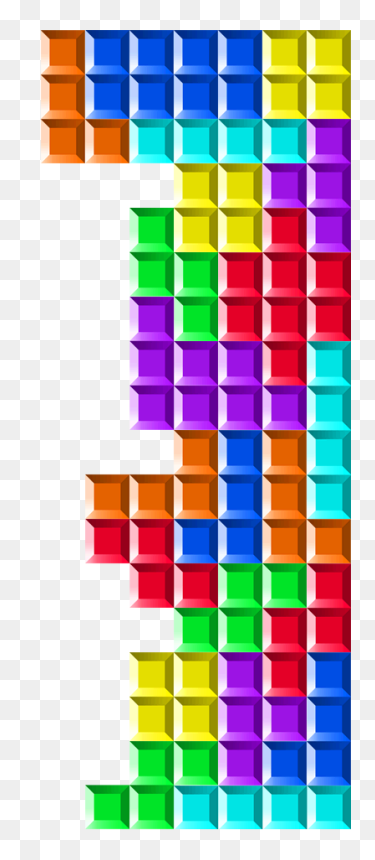

Tetris
 

Tetris (Russian: Тетрис [ˈtɛtrʲɪs]) is a tile-matching video game created by Russian software engineer Alexey Pajitnov in 1984 for the Electronika 60 computer. It has been published by several companies, most prominently during a dispute over the appropriation of the rights in the late 1980s. After a significant period of publication by Nintendo, the rights reverted to Pajitnov in 1996, who co-founded The Tetris Company with Henk Rogers to manage licensing.

The aim in Tetris is simple; you bring down blocks from the top of the screen. You can move the blocks around, either left to right and/or you can rotate them. The blocks fall at a certain rate, but you can make them fall faster if you’re sure of your positioning. Your objective is to get all the blocks to fill all the empty space in a line at the bottom of the screen; whenever you do this, you’ll find that the blocks vanish and you get awarded some points.
Click to view Tetris source coded